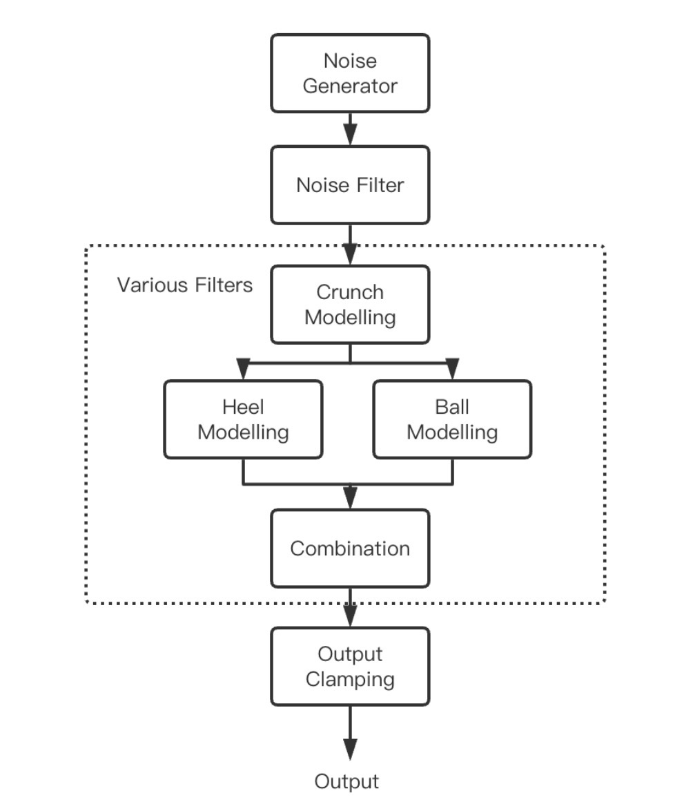
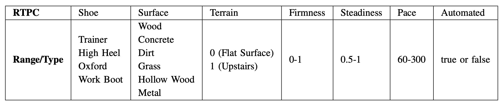
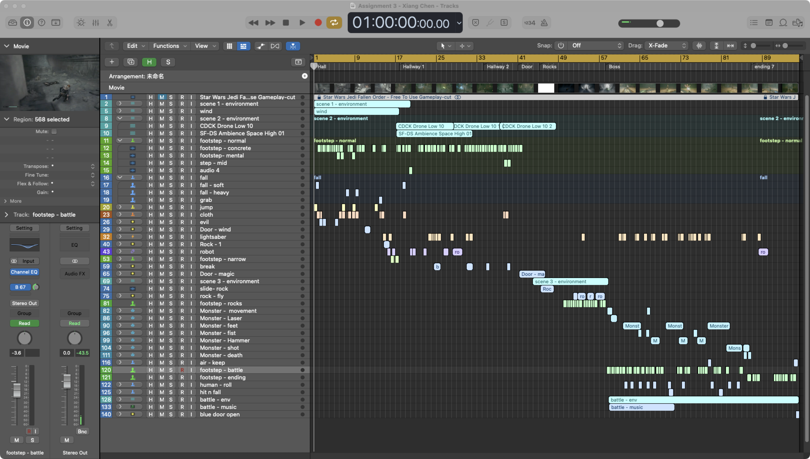

由于兼容问题，Chrome浏览器电脑端偶尔会出现视频无法播放的情况。
请戳网盘链接：作品集 https://www.aliyundrive.com/s/GY15Za9TZS5 提取码: 0i7b
游戏音频引擎的程序化脚步声生成 2023.5 - 2023.9
基于C++与Wwise SDK开发的一款脚步声合成器，可通过RTPC实时控制鞋面与地面类型、脚步速度等参数。
代码：https://github.com/miasolChan/WwiseFootsteps
**论文摘要翻译：**本论文介绍了为 Wwise 游戏音频引擎创建的程序化脚步声插件，如何设计脚步声合成模型，以及如何在 Wwise 中实施、测试和评估该模型。该插件具有可选择四种鞋子类型、六种表面类型和两种地形的功能。通过调整步伐，它可以实现从步行到跑步的范围。此外，脚步的稳固性和稳定度等参数还能为脚步提供更多细节。所有这些参数都可以在 Wwise 中实时映射，并与游戏参数相关联，从而实现实时程序化脚步。
声音设计模型：
RTPC设置：
复古效果器
该作品是硕士期间Music and Audio Programming课程的最终自命题项目，最终分数88（70分为Distinction）。目前在Github已开源https://github.com/miasolChan/Vintage-Effect , 其中的report.pdf对涉及到的DSP算法与优缺点等进行详细阐述。
该项目使用Bela平台，基于C++与DSP算法实现的实时音频软件效果器。功能包括噪声生成、Wobble效果、三种失真算法、四种模拟采样器、Schroeder算法混响。
Bela的实时音频开发管线与许多平台和框架（如JUCE、WwiseSDK）类似，所以能够作为参考较好得进行平台移植。
游戏音效设计（线性）2022.12
视频素材来源于网络，使用Logic Pro作为编辑器，其中为适应游戏的3D环境使用到了Logic的空间音频。视频中包括但不限于角色动作与交互、环境塑造、战斗场景设计等。
基于JUCE的数字合成器设计与开发 2022.5
本科毕业设计与论文，是一款基于C++ JUCE框架实现的一款包含波表与减法合成的软件合成器，主要实现内容包括：波表合成算法、ADSR包络控制、IIR滤波器、各类常见效果器、音频可视化以及相关GUI界面等，滤波器和效果器的实现是使用的JUCE自带音频功能，GUI设计参考Kengo的设计。
参与撰写《1小时出片 短视频制作从入门到精通》音频部分的内容
-
一本关于短片拍摄与制作的书籍，负责本书音频部分的撰写与教程录制，2023年3月由人民邮电出版社出版。
-
前期进行调研与分析短视频创作者对于音频部分的质量追求与制作困境。
-
撰写内容包括音频基础知识普及、前期录音介绍、短视频配乐选取、iZotope RX8后期音频修复。
其他作品
这一部分不是主要作品，多数是个人学习和练习作品，包含但不限于音效、音乐、编程等。
网易云
https://music.163.com/#/artist?id=12528657
Wwise简易环境声系统
易装机——电脑装配移动平台开发
本人负责的内容：
- 校级创新项目，担任项目负责人，负责组织与协调组内成员进行工作。
- 前期：项目需求文档进行撰写；通过Adobe XD进行原型设计。
- 开发：前后端接口文档撰写、SpringBoot实现后端功能与数据库对接、上传服务器、软件测试等。
后端代码开源：https://github.com/miasolChan/Yi
其他内容请访问：易装机项目支持文件
SOLV网站
独立开发， Github链接：https://github.com/miasolChan/SOLV
技术展包括：
- 前端：LayUI/html/css/js/JQuery
- 数据交互：jsp/AJAX
- 后端:：spring/springMVC/mybatis
- 项目管理：Maven
- 数据库：MySQL
- 服务器：测试用Tomcat，部署在阿里云
项目展示和介绍：基于SSM框架的视频网站开发